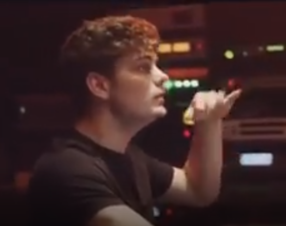

Le logiciel fl Studio est un logiciel utilise dans le domaine musicale.
Surtout pour la musique Eléctronique
EDM(Eléctronic Dance Music)
Voici quelques Dj qui utilisent ce Logiciel:
- Martin garrix

- Alan Walker
- Marshmello
- Avicii
Il est à notée que nul besoin de connaitre
les bases de la musique ou des instruments pour l'utiliser.
Il possede dejà des outils qui facilitent la composition
pour les débutants.
Il offre dejà une variétée de son pré-installé directement
prèt à l'emploi mais laisse aussi les utilisateurs a créer leur
propre sons tout comme le langage
C qui nous laisse créer nos propres fonctions.
Pour Terminer ce petit introduction de
fl Studio,
Voici un petit instrument que j'ai fait
Revenir au cv